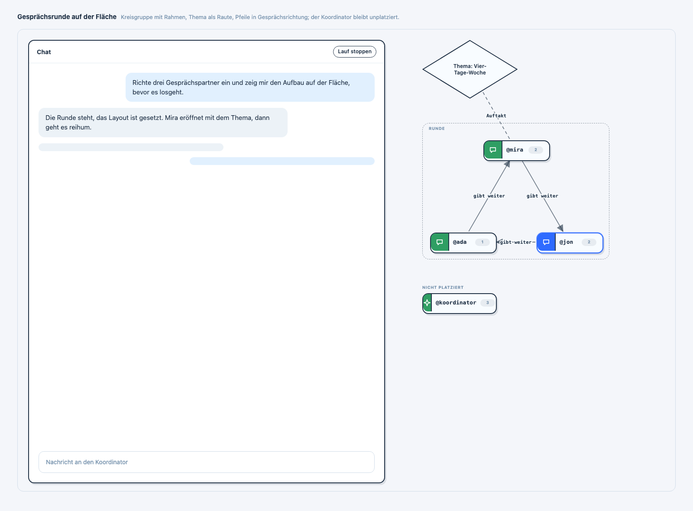
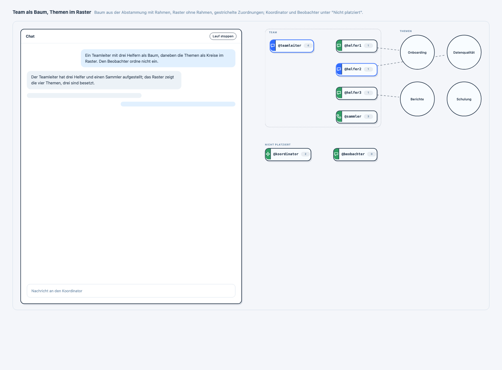

Die Fläche neben dem Chat: Layoutgruppen statt Kräfte-Layout
Der Koordinator gestaltet die Fläche selbst mit dem Werkzeug canvas_layout_replace:
geschachtelte Gruppen (Reihe, Spalte, Umbruch, Raster, Kreis, Baum), Formen mit Text (Kreis, Raute)
und Linien nur auf Ansage, immer von einer Entität zu einer anderen. Automatische Linien gibt es nicht
mehr. Eine Gruppe zeigt ihre Beschriftung als Überschrift; einen gestrichelten Rahmen zeichnet sie nur
mit frame: true. Wen der Koordinator nicht platziert, sammelt die Fläche unter der Überschrift
„Nicht platziert" als Abstammungsbaum.
Die zwei Bilder sind mit der echten Layout-Engine und dem echten CSS gerendert
(build-canvas-layout.ts, Screenshots per headless Chrome); Zustände und Zahlen sind
erfunden, der Chat links ist eine Attrappe.
Gesprächsrunde
Drei Gesprächspartner im Kreis mit Rahmen, darüber das Thema als Raute, Pfeile in Gesprächsrichtung mit Beschriftung, eine gestrichelte Linie ohne Pfeil für den Auftakt. Der Koordinator ist nicht platziert und erscheint darunter.

Team als Baum, Themen im Raster
Links der Baum aus der Abstammung des Teamleiters mit Rahmen und Überschrift, rechts ein Raster mit zwei Spalten ohne Rahmen, gestrichelte Zuordnungen von jedem Helfer zu seinem Thema. Das vierte Thema hat bewusst keine Linie. Koordinator und Beobachter stehen unter „Nicht platziert", der Beobachter als Kind des Koordinators.

Was die Bilder gezeigt haben
- Bei drei Mitgliedern war der Ring zu eng: die Linienbeschriftung zwischen zwei Nachbarn klemmte zwischen den Karten. Der Kreis hält jetzt zwischen Nachbarn zusätzlich Platz für Linie und Beschriftung.
- Ohne automatische Linien trägt im Baum allein die Position die Abstammung: Vater links oben, Kinder rechts untereinander. Das reicht, solange der Baum einen Rahmen oder eine Überschrift hat.
Beobachtung außerhalb dieses Entwurfs: die Statusfarbe der Karten (arbeitet, wartet, fertig) unterscheidet Grün und Blau. Das Symbol nennt nur die Rolle, den Zustand trägt sonst nur der Tooltip.